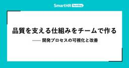

QA - SmartHR Tech Blog
https://tech.smarthr.jp/archive/category/QA
SmartHR 開発者ブログ
フィード

入社3ヶ月のQAEが振り返る、立ち上がりの日々とこれから
QA - SmartHR Tech Blog
はじめまして！勤怠管理・給与計算ユニットでQAE（QAエンジニア）をしているjuniです。2026年5月にSmartHRへ入社し、給与計算プロダクトの品質保証を担当しています。 入社から3ヶ月が経ち、気づけば4ヶ月目に入っています。この記事では、最初の3ヶ月でやってきたことと、これから注力していくことを紹介します。立ち上がり方は担当プロダクトや状況によってさまざまだと思いますが、一つの例として、SmartHRの品質保証に興味がある方に、入社後にどう立ち上がり、その先で何に取り組もうとしているのかを知ってもらえたら嬉しいです。 これまでの経歴 前職までの経歴を簡単にご紹介します。 1社目：SIe…
3日前

品質を支える仕組みをチームで作る —— 開発プロセスの可視化と改善 62
62
QA - SmartHR Tech Blog
こんにちは！SmartHRでQAエンジニア（QAE）をしているyugeです。前回の記事で触れたDuolingoの連続記録が、ついに1,500日を超えました。日々の小さな積み重ねによって、以前は聞き取りづらかった音が聞こえるようになるなど、着実な変化を実感しています。 今回は、日々の開発プロセスで品質を守れる状態を目指し、チームで進めてきた改善の取り組みを紹介します。 体制変更で見えてきた、従来プロセスの課題 個々の判断に支えられていたプロセス 私は現在、プロダクト基盤ユニット内で権限基盤チームのインプロセスQAとして活動しています。このチームでは、体制が変わり、複数の開発を並行して進めるなど、…
6日前

不具合情報の集約基盤を整え、品質改善に活かすまで
QA - SmartHR Tech Blog
こんにちは、SmartHR 品質保証本部 Directorのtarappoです。 最近は組織周りの話を多くしてきましたが、今回は「不具合に関する情報を集める基盤」を整えたことについて、かんたんに紹介しようかと思います。 本記事では「どういった基盤を整えたのか」「今、どこまで整ってきているのか」、そしてそれによって「なにができるようになってきているのか」を順に説明していきます。 不具合に関する情報を集める基盤 組織の規模が小さいうちは、周りで起きていることが見えやすく、大きな問題になる前に対処しやすかったりします。 しかし、会社やプロダクトがスケールしていくと定性データといえる「肌感」だけでおこ…
12日前
SmartHRの信頼性を支える —— 人事マスタエリアのQAエンジニアが今取り組んでいること
QA - SmartHR Tech Blog
こんにちは。SmartHR品質保証本部、人事マスタユニットのkanna、kaomiです。 2026年3月に公開した「SmartHRの人事マスタを守る —— QAエンジニアとして挑む、品質保証の現場」では、人事マスタユニットが抱える品質保証の課題と、それに向き合うために始めた取り組みを紹介しました。 前回の記事から数か月が経ち、私たちは開発チームとともに、品質リスクを開発の早い段階で見つけ、継続的に改善する仕組みづくりを進めています。この記事では、前回お伝えした取り組みの続編として、人事マスタエリアで求められる品質保証と、QAエンジニアが現在どのように「信頼性」を支えているかを紹介します。 人事…
1ヶ月前
半期をふりかえり、来期を考える「QA Summit」を開催しました
QA - SmartHR Tech Blog
こんにちは、SmartHR 品質保証本部 Directorのtarappoです。 品質保証本部では半期*1に1度「QA Summit」という会を開催しています。 先日、FY26上半期のQA Summitを開催しました。 本記事では、発表内容の詳細については社内情報を含むため紹介できませんが、QA Summitをどういった目的で、どのように開催しているのかを紹介します。 QA Summitとは QA Summitとは、品質保証本部に所属するQAEのメンバー全員が集まって、半期のふりかえりと来期なにをやるかを共有する場です。 リモートワークがメインな働き方をしているなかで、同じ専門性を持つメンバー…
2ヶ月前
現役QAエンジニア×Directorインタビュー ── SmartHRが、初めて新卒QAエンジニア採用を始める理由
QA - SmartHR Tech Blog
こんにちは！エンジニアの新卒採用人事をしているikuraと申します。 「エンジニア＝コードをバリバリ書く人」。そんなイメージを持っている方も多いかもしれません。でもSmartHRには、「コードを書くことだけがエンジニアじゃない」という選択肢があります。開発全体に関わりながら、プロダクトの価値とユーザー体験を支える──それがQAエンジニアという職種です。 そんなQAエンジニアを、SmartHRは2028年卒採用に向けて2026年から募集開始します。今回はその第一歩として、QAエンジニアとして活躍するhigashi173さんと、品質保証本部のDirectorを務めるtarappoさんにインタビュー…
2ヶ月前
人生（ほぼ）初登壇したので、内容の補足や感想などをまとめてみました
QA - SmartHR Tech Blog
こんにちは。QAエンジニアのtaikiです。 2026/05/19に QA Test Talk Vol.6 がSmartHR イベントスペースで開催され、「横断組織出身のQAEがインプロセスQAEでつまずいたこと・活かせたこと」というテーマで僕が登壇しました。 筆者の登壇中の写真 本記事では、登壇資料では話しきれなかった内容の補足や、初登壇を終えた感想などをまとめています。 なぜこの内容で登壇したか SmartHR入社前に色々調べたものの、インプロセスの動き方や横断QAとの違いについて、実体験に基づいて書かれた記事はあまり見つかりませんでした。 そのため、入社後のイメージを付けづらく、不安を感…
3ヶ月前
JaSST Tokyo 2026参加レポート
QA - SmartHR Tech Blog
こんにちは。品質保証本部タレントマネジメントユニットのtoyoseaです。 2026年3月20日（金）に、東京ビッグサイトで開催されたJaSST Tokyo 2026にSmartHRのメンバーが参加および登壇しました！ 今年のJaSST Tokyoは、基調講演から事例セッションに至るまで生成AIをテーマにした発表が非常に多く、QAエンジニアの役割やテストプロセスがAIによってどう変わっていくのか、各社の試行錯誤が垣間見えるシンポジウムでした。 本記事では、その中でも特にSmartHRのQAメンバーの興味を引いたセッションを取り上げ、それぞれの概要と感想を紹介します。すべてのセッションをカバーす…
4ヶ月前
最初の30日で何ができる？ SmartHRに飛び込んだQAエンジニアのオンボーディング記録
QA - SmartHR Tech Blog
はじめまして！ 2026年3月からSmartHRに入社したasherです。 私は品質保証本部の勤怠管理・給与計算ユニットに配属され、勤怠管理機能のQAエンジニアとして働いています。 この記事では私が入社してから30日間でQAエンジニアとして「仕事が回り始める状態」を作るためにやったことをまとめています。 Day 1–5：まず「仕事が始められる状態」を作る 入社して最初の一週間はとにかくオンボーディングタスクをこなしていました。 SmartHRのオンボーディングタスクには、「全新入社員向け」「所属するQA組織向け」「担当プロダクト向け」の3種類があり、ボリュームがそれなりにあります。最初は「全部…
4ヶ月前
開発プロセスに他職種の知見を届ける ── QAエンジニアによる仕組みづくりの現在地
QA - SmartHR Tech Blog
QAエンジニアが取り組む、他職種の知見を開発プロセスに届けるための仕組みづくり こんにちは、SmartHR 品質保証本部 レバレッジ推進ユニットのark265とgo-sanです。 過去の記事（「組織」と「AI」の品質課題に挑む ──レバレッジ推進ユニットの現在地、未来へレバレッジをかけるためのレバレッジ推進ユニットの役割と今）では、レバレッジ推進ユニットがビジネスサイドや周辺職種へのヒアリングを進めてきた話、そして、仕組みとして確立する手前の領域を支援するという軸についてお伝えしました。 今回はその続きです。ヒアリングや仮説検証を経て、現在取り組んでいるカスタマーサポートチームとの協業について…
4ヶ月前
QAエンジニアがバックエンドの自動テストに踏み込めるようになるために —— タレントマネジメントユニットでの学びと実務での活用
QA - SmartHR Tech Blog
品質保証本部タレントマネジメントユニット（以下、タレマネユニット）のhigashiです！ 本記事ではユニットで直近取り組んだバックエンドの自動テスト関連のスキル強化と活用の取り組みを紹介します。タレマネユニットが普段どんな取り組みをしているかの参考になれば幸いです。 取り組みの背景・取り組み開始前のメンバーのスキル感 タレマネユニットでは私たちの目指す姿にむけて「プロダクト特性や状況に合わせた本質的な価値を見極め、その価値を守り、より最大化できるよう最適な手法を考え実行していく」ことを推し進めています。*1 管掌範囲の中でも特に事業インパクトが大きいチームに対してQAエンジニアをアサインし、チ…
5ヶ月前
JaSST’26 Tokyo 登壇レポート —— 東京ビッグサイトでの2つの登壇の感想戦
QA - SmartHR Tech Blog
はじめに 3/20（金）にJaSST’26 Tokyoが東京ビッグサイトで開催されました。 今回、ゴールドスポンサーとしてテクノロジーセッションを2枠いただいたので、次についての話をしてきました。 登壇１：開発チームとQAエンジニアの新しい協業モデル - 年末調整開発チームで実践する【QAリード施策】- higesawa, kaomiが登壇 登壇２：スケールアップ企業でQA組織が機能し続けるための組織設計と仕組み〜ボトムアップとトップダウンを両輪としたアプローチ〜 tarappoが登壇 開発チームとQAエンジニアの新しい協業モデル - 年末調整開発チームで実践する【QAリード施策】- spea…
5ヶ月前
入社2年目を迎えたインプロセスで働くQAエンジニアの業務紹介
QA - SmartHR Tech Blog
こんにちは！SmartHRの品質保証本部のSenです。 この記事では「SmartHRのQAエンジニアが普段どんなふうに働いているのか」を、最近の私の業務内容をもとに紹介します。 「QAエンジニア＝テストする人」というわけではなく、品質を前に進めるために日々どういったことをしているかが少しでもみなさんに伝わると嬉しいです。 前提（私がどんな立ち位置のQAエンジニアか） 2025年2月にSmartHRに入社し、2025年7月からは給与計算領域の開発チームにインプロセスQA（品質保証本部に所属しつつ、開発チームに加わって動くQA）として参加しています。 組織の詳細な体制図については次の資料を見てくだ…
6ヶ月前
SmartHRの人事マスタを守る —— QAエンジニアとして挑む、品質保証の現場
QA - SmartHR Tech Blog
こんにちは。SmartHR品質保証本部のkannaとkaomiです。 kanna：2025年10月入社。人事マスタユニットのQAエンジニア。好きな動物はパグです。 kaomi：2023年07月入社のQAエンジニア。今年1月に年末調整プロダクトから人事マスタユニットに異動。好きな動物はウォンバットです。 私たちが所属する人事マスタユニットは、2026年からQAエンジニア（以降QAEと表記）が後述する人事マスタエリアに本格的に関わりはじめた、まだまだ走り出したばかりのユニットです。 このブログでは、私たちがどんな課題を抱え、どう向き合っているのか、そしてどんな仲間と一緒に働きたいのかを、現場の言葉…
6ヶ月前
プロダクトエンジニアと肩を並べて品質をデザインする｡入社3ヶ月で実践した､開発プロセスから変えるQAの形
QA - SmartHR Tech Blog
SmartHRにQAエンジニア(以降、QAEと表記)として入社して3ヶ月が経ちました。 振り返れば、『とにかく、小さくても何か貢献しなくては！』と必死になっている間に過ぎていった3ヶ月だったと感じます。 この記事では、「開発チームにおけるQAEが何をするべきなのか」と自分なりの役割を模索しながら取り組んできたことや、 その背景にあるSmartHRの文化・雰囲気についてご紹介できればと思います。 配属先はQAEが一人も居ない開発チーム 入社して早々に任されたのは、QAEが一人もいない開発チームでした。 そもそも設立半年の新しいチームで、QAEが居ないどころか、QAEが過去に在籍した実績もありませ…
7ヶ月前
SmartHRのQAエンジニア歴4年で見えてきた「QAエンジニアの役割」
QA - SmartHR Tech Blog
こんにちは、SmartHRのwattunです。 私は2022年1月にQAエンジニアとして入社し、2024年4月からはQAエンジニアとプロダクトオーナーを兼務してきました。そして2026年1月から、プロダクトマネジメント本部で新しいチャレンジをすることになりました。 入社時点では、「QAエンジニアの役割は品質を守ることだ」と考えていました。しかし、この4年間で、「QAエンジニアの責務」についての見え方は大きく変わりました。品質を守るという役割を超えて、「組織がどう判断し、どう進むか」を支える役割としてQAエンジニアを捉えるようになったのです。 この記事では、これまでの経験を通じてたどり着いた「Q…
8ヶ月前
QAエンジニアがSmartHRに転職して4ヶ月で感じたこと
QA - SmartHR Tech Blog
はじめに こんにちは、SmartHRでQAエンジニアを務めている山下です。 2025年8月にSmartHRに入社しました。 この記事を書きながら、入社日の翌日にXにポストした内容が過去一番のいいね数と閲覧数で、入社早々にびっくりしたことを思い出しました。 私は品質保証本部の労務プロダクト品質保証部の労務ユニットAに配属されています。 この記事では、入社してから4ヶ月間でチームに参加して感じたこと、良かった点や改善の余地がある点について書きます。 品質保証本部の組織に関しては品質保証部から品質保証本部へ - 労務QA体制アップデートの背景とこれから をご参照ください。 良かった点 私がチームに参…
9ヶ月前
未来へレバレッジをかけるためのレバレッジ推進ユニットの役割と今
QA - SmartHR Tech Blog
未来へレバレッジをかけるためのレバレッジ推進ユニットの役割と今 こんにちは、SmartHR 品質保証本部のtarappoです。 次のテックブログに記載したとおり、品質保証本部では2025年1月から「レバレッジ推進ユニット」というユニットを組成し、活動をしています。 このユニットは、特定のプロダクトを担当せず、SmartHR全体の品質向上に貢献するために、レバレッジをかけられる領域にフォーカスする、というミッションを持っています。 この記事では、レバレッジ推進ユニットの活動の軸となっている「0.n → 1」への支援についてご紹介します。 これは、まだQA視点を届けられていない領域に対し、その価値…
10ヶ月前
勤怠管理機能の開発における労働時間計算の難しさとやりがい
QA - SmartHR Tech Blog
勤怠管理機能の開発には、さまざまな難しさがあります。皆さんは「勤怠管理機能の開発」と聞いてどんな難しさを想像されるでしょうか？イメージしづらいかも知れませんが、とても考えることが多く、難しい側面を持った機能です。この記事では、具体的にどういった点が難しいのか、私達がどう取り組んでいるのかを紹介したいと思います。
10ヶ月前
「LLM搭載プロダクトの品質保証の模索と学び」の発表まとめと補足
QA - SmartHR Tech Blog
こんにちは！レバレッジ推進ユニットでQAエンジニアをやっているark265です。今回はQA Test Talk Vol.5で同じユニットのgonkmが発表した「LLM搭載プロダクトの品質保証の模索と学び」の発表内容のまとめと内容の補足を書いていこうと思います。 発表資料 レバレッジ推進ユニットがAIの品質保証に取り組んだ理由(pp.7-10) アプローチ(pp.11-19) インプットする対象 インプットの方法 知識の整理と現状課題の把握 取り組み(pp.22-25) AIの進化スピードとドキュメンテーションの課題 活動を通して得た学び(pp.27-29) 「評価」と「テスト」という2つの活動…
1年前
品質保証部から品質保証本部へ - 労務QA体制アップデートの背景とこれから
QA - SmartHR Tech Blog
こんにちは、SmartHR 品質保証本部のtarappoです。 品質保証部から品質保証本部へ 2025年10月1日から品質保証部は「品質保証本部*1」となりました。 本記事では、その背景と意図について説明します。 具体的には以下の２点です。 「本部」となった理由 「本部化」に伴う労務ユニットの再編 なぜ「本部」となったのか 今回の「本部化」の目的を簡単に説明します。 「本部化」は、ボトムアップの文化を大事にしつつも、組織としてより広く・深く動けるようにするための一歩です。 これによって、短期的な改善だけでなく、中長期的な視点での品質戦略や改革が進められるようになります。 これまで品質保証部は、…
1年前
品質保証部タレントマネジメントユニットのチームビルディング内容紹介
QA - SmartHR Tech Blog
品質保証部のタレントマネジメントユニットは4名で構成されており、うち3名が2025年の3, 4月に入社したばかりのメンバーです。 現チーフである自分もそのうちの1人で、4月に入社しました。 今回は、まだSmartHRについても熟知できていない、メンバーともはじめましての中で、チームとして動いていけるよう、どのようにチーフとして立ち回ってきたかについてご紹介します。 前提 4人チームで、1名は2年在籍、1人が3月入社、2人が4月入社(現チーフ込) 全員別々のプロダクトにアサインされており、実質的な業務上の絡みはなし 入社後1ヶ月ほどのメンターが付く時期を除くと、他メンバーと話をするのは週1のユニ…
1年前
探索的テスト補助用テストケースの自動生成 ー 使用したLLMプロンプトもご紹介
QA - SmartHR Tech Blog
探索的テスト補助用テストケースの自動生成 ー 使用したLLMプロンプトもご紹介 勤怠管理機能チームでQAエンジニアをしているringoです。 勤怠管理機能の開発では、1つの大きな単位での機能を複数のProduct Backlog Item(以下、PBI)に分割し、リリース前に「フィーチャーテスト」という、機能全体の探索的テストを行なうフェーズを設けています。ここで言う探索的テストは、テスト実行者が機能を実際に操作しながら、事前に定義されていない観点や課題を能動的に発見していくテスト手法を指しています。 今回は、このフィーチャーテストのフェーズにおいて、Clineを用いて探索的テストの補助となる…
1年前
課金基盤の長期開発プロジェクトにおける総合テストの実践と学び
QA - SmartHR Tech Blog
こんにちは！品質保証部のプロダクト基盤ユニット所属、QAエンジニア（以下、QAE）のchokichiです。 今回は、「雇用形態別課金」プロジェクトの総合テストについて振り返ってみたので、設計思想から実際の結果分析まで、包み隠さずご紹介します。 ※本記事でいう「総合テスト」は、外部システムとの連携や運用フローの確認も含めたリリース前の総合的なテストという意味です。 「雇用形態別課金」プロジェクトは、課金基盤チームが約11ヶ月という長期間をかけて開発した大規模プロジェクトです。そのうち、総合テストは約3ヶ月かけて実施しました。 同じように長期開発プロジェクトに取り組んでいる開発チームの皆さんや、基…
1年前
品質を「語る」とき、私たちは何を話しているのか
QA - SmartHR Tech Blog
品質を「語る」とき、私たちは何を話しているのか。独り歩きする魅力的品質、当たり前品質 こんにちは！QAエンジニアのhigesawaです。 今回は開発現場やネット記事などで私が感じる「狩野モデル（Kano Model）」のモヤモヤを言語化してみたいと思います。 はじめに：それ、本当に「品質」の話ですか？ 「この機能、ユーザーにとって魅力的品質だよね」 「これはあって当たり前の機能だから当たり前品質だ」 開発の現場やプロダクト会議で、こんな言葉を耳にしたことがある人は多いのではないでしょうか。 また、ネット記事で魅力的品質や当たり前品質の具体例として「〇〇機能」と記載されているのを目にしたことがあ…
1年前
品質保証部 労務ユニット体制の変更とそれに伴うメンバー募集を新規にオープンしました！【更新済】
QA - SmartHR Tech Blog
品質保証部 労務ユニット体制の変更とそれに伴うメンバー募集を新規にオープンしました！ 本記事は体制変更ならびに採用の確定などに伴い、求人部分の情報を更新をしています。 体制の変更については次の記事を参照してください。 品質保証部から品質保証本部へ - 労務QA体制アップデートの背景とこれから - SmartHR Tech Blog SmartHR 品質保証部マネージャーのtarappoです。 SmartHRは7月から下半期になります。 下半期がはじまったこのタイミングで、品質保証部の労務ユニットの体制変更をおこないました。 その体制を変更するに至った理由と、今回の体制に伴い新たにオープンした求…
1年前
年末調整チームの品質保証における半年間の改善
QA - SmartHR Tech Blog
年末調整チームの品質保証における半年間の改善 こんにちは。年末調整チームでプロダクトエンジニアをやっているkashiwara0205です。 私はチームの中で品質保証についてオーナーシップを持っています。 年末調整チームには専任のQAエンジニアがいないため、チーム内で品質保証に関わる業務の推進役を担当しています。 2024年11月頃から2025年7月の現在に至るまで、様々な施策にチーム全体で取り組んできました。 この半年間で取り組んだ内容や効果について時系列で紹介します。 不具合分析の実施（2024年 11月 ~ 2025年 1月） まず、現状を知るためにQAエンジニア主催で不具合分析を実施しま…
1年前
新卒0期生エンジニアと一緒に品質について考えてみた
QA - SmartHR Tech Blog
こんにちは！QAエンジニアのtoyoseaです。 この記事では、2025年4月入社の新卒0期生のプロダクトエンジニアを対象に行なった品質保証部のオンボーディング施策についてお伝えします。 品質保証部のオンボーディング施策について 2025年4月、SmartHRに新卒0期生（プロダクトエンジニア5名）が入社してくれました。 これを受けて、品質保証部では「品質について考える会」や「テスト設計」に関するオンボーディング施策を実施しました。 背景としては、新しく入社された方に品質保証部との関わり方や今後の方針について知ってもらった上で、QAについての理解を深めてもらうためです。 そして、本オンボーディ…
1年前
t-wadaさん「開発者生産性の観点から考える自動テスト」社内講演会
QA - SmartHR Tech Blog
集合写真（t-wadaさんのポーズと言われ一部が腕を組んでいるシーン） こんにちは、品質保証部のtarappoです。 2025年5月26日（月）に和田卓人さん（以後、t-wadaさん）をお招きし、社内講演会を開催しました。 本記事では、その講演会に至った経緯や講演会の内容、そしてそこからのアクションについて紹介します。 t-wadaさんのプロフィールは次のとおりです。 和田卓人 （わだ たくと） プログラマ、テスト駆動開発者 学生時代にソフトウェア工学を学び、オブジェクト指向分析/設計に傾倒。執筆活動や講演、ハンズオンイベントなどを通じてテスト駆動開発を広めようと努力している。 『プログラマが…
1年前
時短・フレックス・子育て──SmartHRのQAエンジニアの実践録
QA - SmartHR Tech Blog
こんにちは！QAエンジニアのhigesawaです。 今回は普段のQA文脈の発信とは趣を変えて、自身の最近の経験を踏まえたワーク・ライフ・バランスについて書いてみようと思います。 はじめに 私は現在品質保証部の中で労務ユニットAに所属しています。 以前当テックブログの品質保証部連載にて記載した SmartHR 品質保証部 労務ユニットAの紹介 にもある通り、労務ユニットAのメンバーの多くは開発チームに所属せずプロダクト横断的に、濃淡をつけた品質保証活動をしています。その中で私は、今年に入ってからは年末調整機能の開発チームに濃度高めで関わっている状況です。 プライベートでは3人家族の一児の父で、こ…
1年前